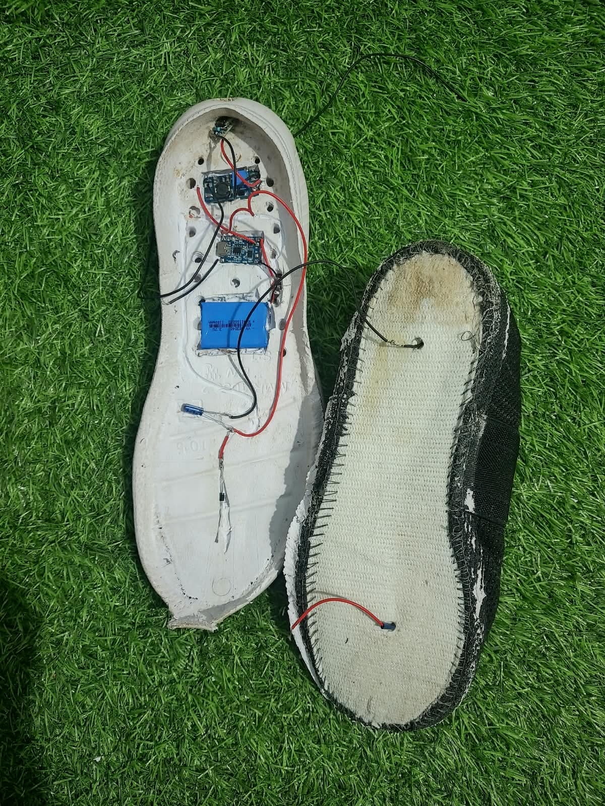
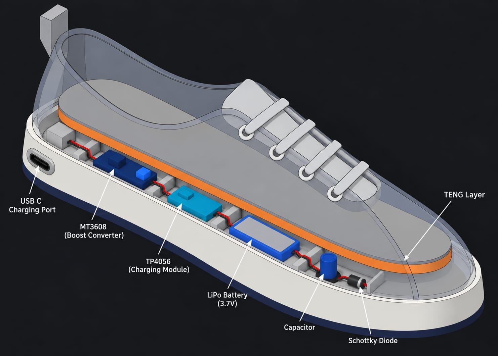
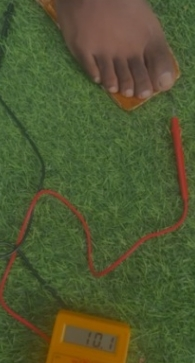

Footstep input
Walking produces mechanical interaction at the insole, providing the input for the energy-harvesting layer.
MECHANICAL ENERGYPROJECT CASE STUDY
ENERGY HARVESTING · HARDWARE PROTOTYPE
Turning the mechanical energy generated by walking into supplemental electrical power for low-power electronics.
Power Step explores an alternative source of energy for situations where conventional electricity is limited and battery replacement can require frequent maintenance.
Explore the projectPOWER STEP
Footstep energy harvesting01 / THE CONTEXT
What if every step could contribute a little electrical energy?
The problem we wanted to address was the difficulty of powering electronic devices in remote areas where access to conventional electricity is limited. Devices that depend on batteries may also require frequent battery replacement and maintenance.
Through Power Step, we aimed to harvest the mechanical energy generated during walking and convert it into supplemental electrical power for low-power electronics.
The goal is to explore a way of reducing dependence on conventional power sources for suitable low-power applications.
THE CORE IDEA
Harvest energy from footsteps using a TENG layer integrated into an insole, condition the electrical output, store energy in a battery, and provide an output for suitable low-power electronics.
02 / THE SYSTEM
The prototype combines an energy-harvesting layer with a rectification and buffering stage, battery storage, and a voltage-boosting output circuit.
Walking produces mechanical interaction at the insole, providing the input for the energy-harvesting layer.
MECHANICAL ENERGYThe triboelectric nanogenerator (TENG) layer integrated into the insole generates electrical pulses from mechanical input.
ENERGY HARVESTINGA Schottky diode and capacitor form the rectification and buffering stage for the harvested electrical pulses.
1N5819 DIODEThe harvested energy is stored in a LiPo battery, which supplies the energy used by the output stage.
LiPo BATTERYAn MT3608 boost converter raises the battery voltage, providing output through a USB-C connector.
MT3608 · USB-CSystem flow Footstep input → TENG layer → Schottky diode and capacitor → LiPo battery → MT3608 boost converter → USB-C output.
UNDERSTANDING THE OUTPUT
The system is intended for suitable low-power electronics. The measured voltage alone does not establish how much usable power is available under every operating condition.
03 / BUILDING THE PROTOTYPE
Our team built a working prototype by integrating the TENG layer into an insole and connecting it to the power-conditioning circuit.

Prototype & insole
The insole and electronics assembled as part of the Power Step prototype.

System design
The 3D design illustrates the intended arrangement of the harvesting layer and circuit components.
04 / TESTING & OBSERVATIONS
Our team tested the rectification stage, measured the TENG voltage response, checked the boost-converter output, and demonstrated the system with an Arduino Nano.
19.2 V
The measured TENG voltage response reached up to 19.2 V during the team's testing.
5 V
The MT3608 output reached 5 V when the battery was fully charged.
Tested
The team tested the 1N5819 Schottky diode rectification stage as part of the power-conditioning circuit.
Arduino Nano
The team demonstrated powering a low-power Arduino Nano using the prototype.
These are the reported results of the prototype tests. The 19.2 V reading describes the measured TENG voltage response; it does not by itself establish continuous power output or charging efficiency. The multimeter photograph documents the testing setup but is not used as proof of the 19.2 V result.

Voltage testing
The testing setup used to observe the voltage response generated during the experiment.
05 / MY CONTRIBUTION
MY ROLE · RESEARCH AND DESIGN
My contribution to Power Step focused on research and design. The project explored how mechanical energy from walking could be harvested and used as supplemental electrical power for low-power electronics.
Our team brought the concept into a working prototype that combined the TENG layer, power-conditioning circuit, battery storage, boost converter, and output connector.
My stated role was research and design. The technical testing and prototype work described above are team-level activities.
06 / RECOGNITION
A milestone for our team
Power Step received Honorable Recognition at IEEE YESIST12 in Indonesia. This milestone gave our team an opportunity to present our footstep energy-harvesting project and share the concept behind our prototype.
07 / REFLECTION
A practical exploration of how everyday movement can become a source of supplemental electrical energy.
Power Step connected a real-world challenge with a tangible hardware prototype. The project brought together an energy-harvesting layer, rectification and buffering, battery storage, a boost converter, and a USB-C output.
Testing the TENG voltage response, verifying the boost-converter output, and demonstrating a low-power Arduino Nano helped our team examine the working concept in practice.
Receiving Honorable Recognition at IEEE YESIST12 in Indonesia marked an important milestone in our project journey.